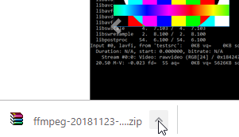
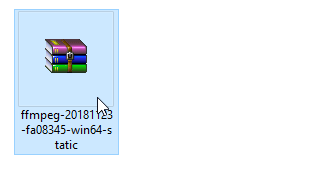
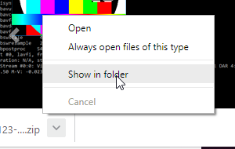
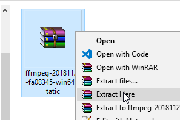
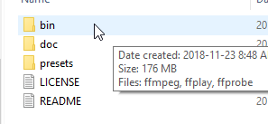
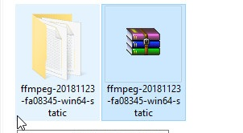
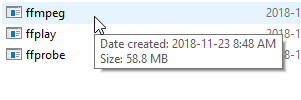

OPTION
01
Extract files via Google chrome > v70.0
Left click |
 | Left Click |
|  | Right click |
 |
Left Click |
 | Double Click |
|  | Double Click |
 |
Check |
 | Installation complete! |
OPTION
02
Extract/Install files via command line
You can also install FFMPEG via the command line. This can be useful is you quickly what to use the application as soon as it's installed or unwrapped. First we are going to set safe the path to winrar in a local variable. This will only persist for as long as the window is open. when ready enter the following command
C:\Users\Rugero\> set path-"c:\Program files\Winrar\";%path%
Now we are going to change the current the directory to whereever your google chrome saved the download from FFMPG.org. In my case it's the default downloads folder, adjuct accordingly and then enter the following command
C:\Users\Rugero\> cd "C:\Users\Rugero\Downloads"
Now we are ready to extract the files. winrar gives us two options on how we what the extracted files store. The first command will extract all files and ignore all directories and subdirectories. The last commmand will extract all files and keep the directory structure intact. FFMpegs zip files has lots of files that depend on each and thus we will chooce the last option. Last the extracted directory/structure will be saved in the same folder as the zip file. Now enter command and that's it you done.